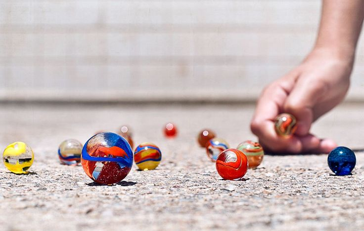

Las canicas son pequeñas esferas de vidrio, cerámica o piedra que se utilizan en un juego tradicional de puntería y estrategia. También se les conoce como "bolitas", "metras" o "marbles".
Existen muchas variantes, pero la más común es el "juego del círculo". Se dibuja un círculo en el suelo y se colocan dentro varias canicas de cada jugador.
Desde una línea marcada a cierta distancia, cada jugador lanza su canica "tiradora" intentando sacar del círculo la mayor cantidad de canicas. Si logra sacar una, la gana y sigue tirando.
El juego termina cuando el círculo queda vacío. Gana quien haya acumulado más canicas.
👥 Jugadores: De 2 a 5 participantes.
⏱️ Duración: Cada partida 10-30 min.
🎯 Objetivo: Sacar del círculo la mayor cantidad de canicas.
🧰 Materiales: Canicas y tiza para el círculo.
• Buena postura: Apoya bien la mano.
• Apunta al centro: Dispara al grupo.
• Canica tiradora: Usa una más pesada.
Haz clic en las canicas para sacarlas del círculo. ¡Atrapa todas!